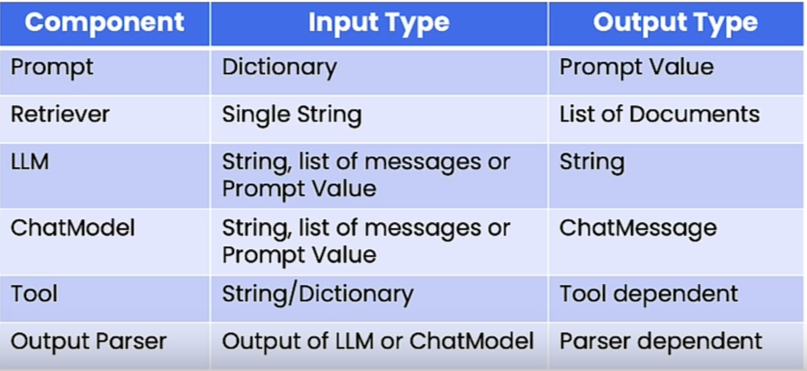

1. IntroductionHow can LLMs interact with our existing software infrastructure? For example, by letting it decide when to make a function call to a different program to get more information, or, to take an action.LLMs were originally designed to generate text for humans, but some LLMs have now been trained to output formatted data such as values stored as JSON to make it easy let LLM decide when to call other code as a subroutine.Here's the outline of this course:OpenAI function callingLangChain Expression Language (LCEL)OpenAI function calling in LangChainTagging and extraction using OpenAI function callingTools and RoutingConversational Agent
2. OpenAI Function CallingOpenAI has fine-tuned the gpt-3.5-turbo-0613 and gpt-4-0613 models to:1. Accept additional arguments through which users can pass in descriptions of functions.2. If it is relevant, return the name of the function to use, along with a JSON object with the appropriate input parameters.For example, we can define this custom function to get the weather info:
import json# Example dummy function hard coded to return the same weather# In production, this could be your backend API or an external APIdefget_current_weather(location, unit="fahrenheit"):"""Get the current weather in a given location""" weather_info ={"location": location,"temperature":"72","unit": unit,"forecast":["sunny","windy"],}return json.dumps(weather_info)
How do we pass this information to the language model? OpenAI has exposed a new parameter called functions through which you can pass a list of function definitions.NOTE: The "description" fields are very important because they're passed directly to the language model.
# define a functionfunctions =[{"name":"get_current_weather","description":"Get the current weather in a given location","parameters":{"type":"object","properties":{"location":{"type":"string","description":"The city and state, e.g. San Francisco, CA",},"unit":{"type":"string","enum":["celsius","fahrenheit"]},},"required":["location"],},}]messages =[{"role":"user","content":"What's the weather like in Boston?"}]import openairesponse = openai.ChatCompletion.create( model="gpt-3.5-turbo-0613", messages=messages, functions=functions)print(response)# {# "id": "chatcmpl-8IfHyztPhNmSXTVEgw5twr6SsUZtC",# "object": "chat.completion",# "created": 1699459310,# "model": "gpt-3.5-turbo-0613",# "choices": [# {# "index": 0,# "message": {# "role": "assistant",# "content": null,# "function_call": {# "name": "get_current_weather",# "arguments": "{\n \"location\": \"Boston, MA\"\n}"# }# },# "finish_reason": "function_call"# }# ],# "usage": {# "prompt_tokens": 82,# "completion_tokens": 18,# "total_tokens": 100# }# }response_message = response["choices"][0]["message"]print(response_message)# <OpenAIObject at 0x7fca00261ea0> JSON: {# "role": "assistant",# "content": null,# "function_call": {# "name": "get_current_weather",# "arguments": "{\n \"location\": \"Boston, MA\"\n}"# }# }print(response_message["content"])# --> should return emptyprint(response_message["function_call"])# <OpenAIObject at 0x7fca00261ef0> JSON: {# "name": "get_current_weather",# "arguments": "{\n \"location\": \"Boston, MA\"\n}"# }print(json.loads(response_message["function_call"]["arguments"])# {'location': 'Boston, MA'}args = json.loads(response_message["function_call"]["arguments"])get_current_weather(args)# '{"location": {"location": "Boston, MA"}, "temperature": "72", "unit": "fahrenheit", "forecast": ["sunny", "windy"]}'
NOTE:Function calling with OpenAI doesn't directly call the function. We still have to do that ourselves. Rather, it just tells us what function to call and what the arguments to that function should be.It's also worth noting that although it's trained to return a JSON, it's acutally not strictly enforced. So, if you're decoding it with json.loads() and you run into some error, that's actually an issue on the model side. So, you might want to put some safeguards around that. NOTE: If we send a message not related to the function, it will not use the function. The model decides whether to call the function.What if we want to force the model whether to use or not to use the function?We use the function_call parameter. It has three modes:* "auto" Let the model decide whether to use the function.* "none" Force not to use the function.* {"name": "get_current_weather"} Force to use the function.NOTE: Function calls counts against the token usage.How to do a function call and actually run the function and pass the output back to the language model?
messages.append(response["choices"][0]["message"])args = json.loads(response["choices"][0]["message"]['function_call']['arguments'])observation = get_current_weather(args)messages.append({"role":"function","name":"get_current_weather","content": observation,})response = openai.ChatCompletion.create( model="gpt-3.5-turbo-0613", messages=messages,)print(response)# {# "id": "chatcmpl-8IfarBiAvimhIt1szLCppH26JNXVS",# "object": "chat.completion",# "created": 1699460481,# "model": "gpt-3.5-turbo-0613",# "choices": [# {# "index": 0,# "message": {# "role": "assistant",# "content": "The weather in Boston is currently sunny and windy with a temperature of 72 degrees Fahrenheit."# },# "finish_reason": "stop"# }# ],# "usage": {# "prompt_tokens": 77,# "completion_tokens": 18,# "total_tokens": 95# }# }
3. LangChain Expression Language (LCEL)This is a new syntax that makes it much easier and more transparent to construct and work with different chains and agents. A lot of the power of LangChain comes from composing chains of different components together. LCEL offers a new way of doing this.LCEL is a runnable protocol. It defines:An allowed set of input types. An allowed set of output types.Required method e.g. invoke, stream, batch, etc.You can also modify parameters at the run time and add options like fallbacks.You can do all these new compositions using the Linux pipe syntax. It will look something like this Chain = prompt | llm | OutputParserThe are a few common methods in LCEL:invoke [ainvoke]stream [astream]batch [abatch]* NOTE: For every method, there's also an asynchronous version, e.g. invoke ainvokeCommon propertiesinput_schemaoutput_schemaCommon I/O

Why use LCEL?Runnables support:* Async, batch, and streaming support* Fallbacks* ParallelismLLM calls can be time consuming.Any components that can be run in parallel are.Logging is built-in.Here is a simple chain:
prompt = ChatPromptTemplate.from_template("tell me a short joke about {topic}")model = ChatOpenAI()output_parser = StrOutputParser()chain = prompt | model | output_parserchain.invoke({"topic":"bears"})# "Why don't bears wear shoes?\n\nBecause they have bear feet!"
3.1. Runnable MapsA more complex example And Runnable Map to supply user-provided inputs to the prompt.
from langchain.embeddings import OpenAIEmbeddingsfrom langchain.vectorstores import DocArrayInMemorySearchvectorstore = DocArrayInMemorySearch.from_texts(["harrison worked at kensho","bears like to eat honey"], embedding=OpenAIEmbeddings())retriever = vectorstore.as_retriever()retriever.get_relevant_documents("where did harrison work?")# [Document(page_content='harrison worked at kensho'),# Document(page_content='bears like to eat honey')]retriever.get_relevant_documents("what do bears like to eat")# [Document(page_content='bears like to eat honey'),# Document(page_content='harrison worked at kensho')]template ="""Answer the question based only on the following context:{context}Question: {question}"""prompt = ChatPromptTemplate.from_template(template)from langchain.schema.runnable import RunnableMapchain = RunnableMap({"context":lambda x: retriever.get_relevant_documents(x["question"]),"question":lambda x: x["question"]})| prompt | model | output_parserchain.invoke({"question":"where did harrison work?"})# 'Harrison worked at Kensho.'inputs = RunnableMap({"context":lambda x: retriever.get_relevant_documents(x["question"]),"question":lambda x: x["question"]})inputs.invoke({"question":"where did harrison work?"})# {'context': [Document(page_content='harrison worked at kensho'),# Document(page_content='bears like to eat honey')],# 'question': 'where did harrison work?'}
3.2. BindWe can also bind parameters. Let's see an example for OpenAI functions:
functions =[{"name":"weather_search","description":"Search for weather given an airport code","parameters":{"type":"object","properties":{"airport_code":{"type":"string","description":"The airport code to get the weather for"},},"required":["airport_code"]}}]prompt = ChatPromptTemplate.from_messages([("human","{input}")])model = ChatOpenAI(temperature=0).bind(functions=functions)runnable = prompt | modelrunnable.invoke({"input":"what is the weather in sf"})# AIMessage(content='', additional_kwargs={'function_call': {'name': 'weather_search', 'arguments': '{\n "airport_code": "SFO"\n}'}})
3.3. FallbacksWith LCEL, it's very easy to attach fallbacks not only to individual components but to entire sequences.In this example, we intentionally use an older LM from OpenAI that is supposed to fail, then we will use fallbacks to handle that.
from langchain.llms import OpenAIimport jsonsimple_model = OpenAI( temperature=0, max_tokens=1000, model="text-davinci-001")simple_chain = simple_model | json.loadschallenge ="write three poems in a json blob, where each poem is a json blob of a title, author, and first line"simple_model.invoke(challenge)# '\n\n["The Waste Land","T.S. Eliot","April is the cruelest month, breeding # lilacs out of the dead land"]\n\n["The Raven","Edgar Allan Poe","Once upon # a midnight dreary, while I pondered, weak and weary"]\n\n["Ode to a # # #Nightingale","John Keats","Thou still unravish\'d bride of quietness, Thou # foster-child of silence and slow time"]'simple_chain.invoke(challenge)# JSONDecodeError model = ChatOpenAI(temperature=0)chain = model | StrOutputParser()| json.loadschain.invoke(challenge)# {'poem1': {'title': 'Whispers of the Wind',# 'author': 'Emily Rivers',# 'first_line': 'Softly it comes, the whisper of the wind'},# 'poem2': {'title': 'Silent Serenade',# 'author': 'Jacob Moore',# 'first_line': 'In the stillness of night, a silent serenade'},# 'poem3': {'title': 'Dancing Shadows',# 'author': 'Sophia Anderson',# 'first_line': 'Shadows dance upon the moonlit floor'}}final_chain = simple_chain.with_fallbacks([chain])final_chain.invoke(challenge)# {'poem1': {'title': 'Whispers of the Wind',# 'author': 'Emily Rivers',# 'first_line': 'Softly it comes, the whisper of the wind'},# 'poem2': {'title': 'Silent Serenade',# 'author': 'Jacob Moore',# 'first_line': 'In the stillness of night, a silent serenade'},# 'poem3': {'title': 'Dancing Shadows',# 'author': 'Sophia Anderson',# 'first_line': 'Shadows dance upon the moonlit floor'}}
3.4. Interfaceinvoke synchronousbatch invoking on multiple inputs (NOTE: in the background, it runs them in parallel).stream returns an iterable useful for applications to gradually show responses as they become available by the LM.ainvoke asynchronous e.g.: response = await chain.ainvoke({"topic": "bears"})
4. OpenAI Function Calling in LangChain4.1. PydanticPydantic is a data validation library for Python.Works with Python type annotations. But, rather than static type checking, they are actively used at runtime for data validation and conversion.Provides built-in methods to serialize/de-serialize models to/from JSON, dictionaries, etc.LangChain leverages Pydantic to create JSON scheme describing function.Pydantic data classes are a blend of Python's data classes with the validation power of Pydantic.They offer a concise way to define data structures while ensuring that the data adheres to specified types and constraints.In LangChain, Pydantic is used to create OpenAI function description (i.e. to create the schema).
4.2. Using Pydantic to define OpenAI functionsWe can use Pydantic to define a function. See below:Note that the docstring of the class act as the description. That's why it's required To be more clear, description for the class (the docstring) is required but the description for the argument (i.e. Field(description="...") is not required.
classWeatherSearch(BaseModel):"""Call this with an airport code to get the weather at that airport""" airport_code:str= Field(description="airport code to get weather for")from langchain.utils.openai_functions import convert_pydantic_to_openai_functionweather_function = convert_pydantic_to_openai_function(WeatherSearch)print(weather_function)# {'name': 'WeatherSearch',# 'description': 'Call this with an airport code to get the weather at that airport',# 'parameters': {'title': 'WeatherSearch',# 'description': 'Call this with an airport code to get the weather at that airport',# 'type': 'object',# 'properties': {'airport_code': {'title': 'Airport Code',# 'description': 'airport code to get weather for',# 'type': 'string'}},# 'required': ['airport_code']}}from langchain.chat_models import ChatOpenAImodel = ChatOpenAI()model.invoke("what is the weather in SF today?", functions=[weather_function])#AIMessage(content='', additional_kwargs={'function_call': {'name': 'WeatherSearch', 'arguments': '{\n "airport_code": "SFO"\n}'}})# We can also bind the functionmodel_with_function = model.bind(functions=[weather_function])# Using it with chainsfrom langchain.prompts import ChatPromptTemplateprompt = ChatPromptTemplate.from_messages([("system","You are a helpful assistant"),("user","{input}")])chain = prompt | model_with_functionchain.invoke({"input":"what is the weather in sf?"})# AIMessage(content='', additional_kwargs={'function_call': {'name': 'WeatherSearch', 'arguments': '{\n "airport_code": "SFO"\n}'}})
4.3. Using Multiple FunctionsWe can pass a set of function and let the LLM decide which to use based on the question context.
classArtistSearch(BaseModel):"""Call this to get the names of songs by a particular artist""" artist_name:str= Field(description="name of artist to look up") n:int= Field(description="number of results")functions =[ convert_pydantic_to_openai_function(WeatherSearch), convert_pydantic_to_openai_function(ArtistSearch),]model_with_functions = model.bind(functions=functions)model_with_functions.invoke("what is the weather in sf?")# AIMessage(content='', additional_kwargs={'function_call': {'name': 'WeatherSearch', 'arguments': '{\n "airport_code": "SFO"\n}'}})model_with_functions.invoke("what are three songs by taylor swift?")# AIMessage(content='', additional_kwargs={'function_call': {'name': 'ArtistSearch', 'arguments': '{\n "artist_name": "taylor swift",\n "n": 3\n}'}})
5. Tagging and ExtractionThis is one of the main use cases for OpenAI functions.This allows us to extract structured data from unstructured text.5.1. TaggingWe have seen the LLM, given a function description, select arguments from the input text, generate a structured output forming a function call. More generally, the LLM can evaluate the input text and generate structured output.In tagging, we pass in an unstructured piece of text along with some structured description, and then we use the LLM to generate some structured output to reason over that input text and create some response in the format of the structured output that we passed in.Here's an example of tagging for performing sentiment analysis.
from typing import Listfrom pydantic import BaseModel, Fieldfrom langchain.utils.openai_functions import convert_pydantic_to_openai_functionclassTagging(BaseModel):"""Tag the piece of text with particular info.""" sentiment:str= Field(description="sentiment of text, should be `pos`, `neg`, or `neutral`") language:str= Field(description="language of text (should be ISO 639-1 code)")convert_pydantic_to_openai_function(Tagging)# {'name': 'Tagging',# 'description': 'Tag the piece of text with particular info.',# 'parameters': {'title': 'Tagging',# 'description': 'Tag the piece of text with particular info.',# 'type': 'object',# 'properties': {'sentiment': {'title': 'Sentiment',# 'description': 'sentiment of text, should be `pos`, `neg`, or `neutral`',# 'type': 'string'},# 'language': {'title': 'Language',# 'description': 'language of text (should be ISO 639-1 code)',# 'type': 'string'}},# 'required': ['sentiment', 'language']}}from langchain.prompts import ChatPromptTemplatefrom langchain.chat_models import ChatOpenAImodel = ChatOpenAI(temperature=0)tagging_functions =[convert_pydantic_to_openai_function(Tagging)]prompt = ChatPromptTemplate.from_messages([("system","Think carefully, and then tag the text as instructed"),("user","{input}")])model_with_functions = model.bind( functions=tagging_functions, function_call={"name":"Tagging"})tagging_chain = prompt | model_with_functionstagging_chain.invoke({"input":"I love langchain"})# AIMessage(content='', additional_kwargs={'function_call': {'name': 'Tagging', 'arguments': '{\n "sentiment": "pos",\n "language": "en"\n}'}})tagging_chain.invoke({"input":"non mi piace questo cibo"})# AIMessage(content='', additional_kwargs={'function_call': {'name': 'Tagging', 'arguments': '{\n "sentiment": "neg",\n "language": "it"\n}'}})from langchain.output_parsers.openai_functions import JsonOutputFunctionsParsertagging_chain = prompt | model_with_functions | JsonOutputFunctionsParser()tagging_chain.invoke({"input":"non mi piace questo cibo"})# {'sentiment': 'neg', 'language': 'it'}
5.2. ExtractionWhen given an input JSON schema, the LLM has been fine-tuned to find and fill in the parameters of that schema.The capability is not limited to function schema.This can be used for general purpose extraction.In extraction, we're going to be extracting specific entities from the text. These entities are also represented by a structured description.Rather than using the LLM to reason over the text and respond with a single output in the structured description, we're using the LLM to look over the text, and extract a list of these elements.Extraction is similar to tagging, but used for extracting multiple pieces of information.
from typing import OptionalclassPerson(BaseModel):"""Information about a person.""" name:str= Field(description="person's name") age: Optional[int]= Field(description="person's age")classInformation(BaseModel):"""Information to extract.""" people: List[Person]= Field(description="List of info about people")convert_pydantic_to_openai_function(Information)# {'name': 'Information',# 'description': 'Information to extract.',# 'parameters': {'title': 'Information',# 'description': 'Information to extract.',# 'type': 'object',# 'properties': {'people': {'title': 'People',# 'description': 'List of info about people',# 'type': 'array',# 'items': {'title': 'Person',# 'description': 'Information about a person.',# 'type': 'object',# 'properties': {'name': {'title': 'Name',# 'description': "person's name",# 'type': 'string'},# 'age': {'title': 'Age',# 'description': "person's age",# 'type': 'integer'}},# 'required': ['name']}}},# 'required': ['people']}}extraction_functions =[convert_pydantic_to_openai_function(Information)]extraction_model = model.bind(functions=extraction_functions, function_call={"name":"Information"})extraction_model.invoke("Joe is 30, his mom is Martha")# AIMessage(content='', additional_kwargs={'function_call': {'name': 'Information', 'arguments': '{\n "people": [\n {\n "name": "Joe",\n "age": 30\n },\n {\n "name": "Martha",\n "age": 0\n }\n ]\n}'}})prompt = ChatPromptTemplate.from_messages([("system","Extract the relevant information, if not explicitly provided do not guess. Extract partial info"),("human","{input}")])extraction_chain = prompt | extraction_modelextraction_chain.invoke({"input":"Joe is 30, his mom is Martha"})# AIMessage(content='', additional_kwargs={'function_call': {'name': 'Information', 'arguments': '{\n "people": [\n {\n "name": "Joe",\n "age": 30\n },\n {\n "name": "Martha"\n }\n ]\n}'}})extraction_chain = prompt | extraction_model | JsonOutputFunctionsParser()extraction_chain.invoke({"input":"Joe is 30, his mom is Martha"})# {'people': [{'name': 'Joe', 'age': 30}, {'name': 'Martha'}]}from langchain.output_parsers.openai_functions import JsonKeyOutputFunctionsParserextraction_chain = prompt | extraction_model | JsonKeyOutputFunctionsParser(key_name="people")extraction_chain.invoke({"input":"Joe is 30, his mom is Martha"})# [{'name': 'Joe', 'age': 30}, {'name': 'Martha'}]
5.3. Real-world ExampleHere, we're going to get a blog post and extract tag information from a sub-set of the text.
from langchain.document_loaders import WebBaseLoaderloader = WebBaseLoader("https://lilianweng.github.io/posts/2023-06-23-agent/")documents = loader.load()doc = documents[0]page_content = doc.page_content[:10000]# TaggingclassOverview(BaseModel):"""Overview of a section of text.""" summary:str= Field(description="Provide a concise summary of the content.") language:str= Field(description="Provide the language that the content is written in.") keywords:str= Field(description="Provide keywords related to the content.")overview_tagging_function =[ convert_pydantic_to_openai_function(Overview)]tagging_model = model.bind( functions=overview_tagging_function, function_call={"name":"Overview"})tagging_chain = prompt | tagging_model | JsonOutputFunctionsParser()tagging_chain.invoke({"input": page_content})# {'summary': 'This article discusses the concept of building autonomous agents powered by LLM (large language model) as their core controller. It explores the key components of such agent systems, including planning, memory, and tool use. It also covers various techniques for task decomposition and self-reflection in autonomous agents. The article provides examples of case studies and challenges in implementing LLM-powered autonomous agents.',# 'language': 'English',# 'keywords': 'LLM, autonomous agents, planning, memory, tool use, task decomposition, self-reflection, case studies, challenges'}# Now, let's get a list of all papers mentioned in the blog postclassPaper(BaseModel):"""Information about papers mentioned.""" title:str author: Optional[str]classInfo(BaseModel):"""Information to extract""" papers: List[Paper]paper_extraction_function =[ convert_pydantic_to_openai_function(Info)]extraction_model = model.bind( functions=paper_extraction_function, function_call={"name":"Info"})extraction_chain = prompt | extraction_model | JsonKeyOutputFunctionsParser(key_name="papers")extraction_chain.invoke({"input": page_content})# [{'title': 'LLM Powered Autonomous Agents', 'author': 'Lilian Weng'}]# In the above, the LM gets confused because it's finding the article itself as the paper! We're going to fix it with giving it a better system message.template ="""A article will be passed to you. Extract from it all papers that are mentioned by this article. Do not extract the name of the article itself. If no papers are mentioned that's fine - you don't need to extract any! Just return an empty list.Do not make up or guess ANY extra information. Only extract what exactly is in the text."""prompt = ChatPromptTemplate.from_messages([("system", template),("human","{input}")])extraction_chain = prompt | extraction_model | JsonKeyOutputFunctionsParser(key_name="papers")extraction_chain.invoke({"input": page_content})# [{'title': 'Chain of thought (CoT; Wei et al. 2022)', 'author': 'Wei et al.'},# {'title': 'Tree of Thoughts (Yao et al. 2023)', 'author': 'Yao et al.'},# {'title': 'LLM+P (Liu et al. 2023)', 'author': 'Liu et al.'},# {'title': 'ReAct (Yao et al. 2023)', 'author': 'Yao et al.'},# {'title': 'Reflexion (Shinn & Labash 2023)', 'author': 'Shinn & Labash'},# {'title': 'Chain of Hindsight (CoH; Liu et al. 2023)',# 'author': 'Liu et al.'},# {'title': 'Algorithm Distillation (AD; Laskin et al. 2023)',# 'author': 'Laskin et al.'}]extraction_chain.invoke({"input":"hi"})# []# Do the same on the entire contentfrom langchain.text_splitter import RecursiveCharacterTextSplittertext_splitter = RecursiveCharacterTextSplitter(chunk_overlap=0)splits = text_splitter.split_text(doc.page_content)defflatten(matrix): flat_list =[]for row in matrix: flat_list += rowreturn flat_listflatten([[1,2],[3,4]])# flatten([[1, 2], [3, 4]])from langchain.schema.runnable import RunnableLambdaprep = RunnableLambda(lambda x:[{"input": doc}for doc in text_splitter.split_text(x)])prep.invoke("hi")# [{'input': 'hi'}]# .map() is used because "prep" returns a list of objects.# To implement extract on all elements of the list, we use .map()chain = prep | extraction_chain.map()| flattenchain.invoke(doc.page_content)# [{'title': 'AutoGPT', 'author': ''},# {'title': 'GPT-Engineer', 'author': ''},# {'title': 'BabyAGI', 'author': ''},# {'title': 'Chain of thought (CoT; Wei et al. 2022)', 'author': ''},# {'title': 'Tree of Thoughts (Yao et al. 2023)', 'author': ''},# {'title': 'LLM+P (Liu et al. 2023)', 'author': ''},# ...]
6. Tools and Routing6.1. ToolsWhen we think about how the LM use functions, there's two components to it:Having a LM decide which function to use and what the inputs to that function should be.Calling that function with those inputs.LangChain combines these two components into something called a Tool.Tool is basically a schema definition for the function and a callable.There's many tools built-in to LangChain but one can create his own tool as well.Selecting from multiple possible tools is called routing.Functions and services an LLM can utilize to extend its capabilities are named "tools" in LangChain.LangChain has many tools available:Search tools, math tools, SQL tools, etc.In this section, we are creating our own tool based on an OpenAI spec.Predating LLMs, the OpenAI specification is routinely used by service providers to describe their APIs.
# importing the tool decorator from langchainfrom langchain.agents import tool@tooldefsearch(query:str)->str:"""Search for weather online"""return"42f"# Creating a definition for the input# This is important because that's what's used by the LMfrom pydantic import BaseModel, FieldclassSearchInput(BaseModel): query:str= Field(description="Thing to search for")@tool(args_schema=SearchInput)defsearch(query:str)->str:"""Search for the weather online."""return"42f"search.args# {'query': {'title': 'Query',# 'description': 'Thing to search for',# 'type': 'string'}}search.run("sf")# '42f'##### Getting the temperature toolimport requestsfrom pydantic import BaseModel, Fieldimport datetime# Define the input schemaclassOpenMeteoInput(BaseModel): latitude:float= Field(..., description="Latitude of the location to fetch weather data for") longitude:float= Field(..., description="Longitude of the location to fetch weather data for")@tool(args_schema=OpenMeteoInput)defget_current_temperature(latitude:float, longitude:float)->dict:"""Fetch current temperature for given coordinates.""" BASE_URL ="https://api.open-meteo.com/v1/forecast"# Parameters for the request params ={'latitude': latitude,'longitude': longitude,'hourly':'temperature_2m','forecast_days':1,}# Make the request response = requests.get(BASE_URL, params=params)if response.status_code ==200: results = response.json()else:raise Exception(f"API Request failed with status code: {response.status_code}") current_utc_time = datetime.datetime.utcnow() time_list =[datetime.datetime.fromisoformat(time_str.replace('Z','+00:00'))for time_str in results['hourly']['time']] temperature_list = results['hourly']['temperature_2m'] closest_time_index =min(range(len(time_list)), key=lambda i:abs(time_list[i]- current_utc_time)) current_temperature = temperature_list[closest_time_index]returnf'The current temperature is {current_temperature}C'get_current_temperature.name# 'get_current_temperature'get_current_temperature.description# 'get_current_temperature(latitude: float, longitude: float) -> dict - Fetch current temperature for given coordinates.'get_current_temperature.args# # {'latitude': {'title': 'Latitude',# 'description': 'Latitude of the location to fetch weather data for',# 'type': 'number'},# 'longitude': {'title': 'Longitude',# 'description': 'Longitude of the location to fetch weather data for',# 'type': 'number'}}from langchain.tools.render import format_tool_to_openai_functionformat_tool_to_openai_function(get_current_temperature)# {'name': 'get_current_temperature',# 'description': 'get_current_temperature(latitude: float, longitude: float) -> dict - Fetch current temperature for given coordinates.',# 'parameters': {'title': 'OpenMeteoInput',# 'type': 'object',# 'properties': {'latitude': {'title': 'Latitude',# 'description': 'Latitude of the location to fetch weather data for',# 'type': 'number'},# 'longitude': {'title': 'Longitude',# 'description': 'Longitude of the location to fetch weather data for',# 'type': 'number'}},# 'required': ['latitude', 'longitude']}}get_current_temperature({"latitude":13,"longitude":14})# 'The current temperature is 30.2C'##### Searching Wiki toolimport wikipedia@tooldefsearch_wikipedia(query:str)->str:"""Run Wikipedia search and get page summaries.""" page_titles = wikipedia.search(query) summaries =[]for page_title in page_titles[:3]:try: wiki_page = wikipedia.page(title=page_title, auto_suggest=False) summaries.append(f"Page: {page_title}\nSummary: {wiki_page.summary}")except( self.wiki_client.exceptions.PageError, self.wiki_client.exceptions.DisambiguationError,):passifnot summaries:return"No good Wikipedia Search Result was found"return"\n\n".join(summaries)format_tool_to_openai_function(search_wikipedia)# {'name': 'search_wikipedia',# 'description': 'search_wikipedia(query: str) -> str - Run Wikipedia search and get page summaries.',# 'parameters': {'title': 'search_wikipediaSchemaSchema',# 'type': 'object',# 'properties': {'query': {'title': 'Query', 'type': 'string'}},# 'required': ['query']}}search_wikipedia({"query":"langchain"})# 'Page: LangChain\nSummary: LangChain is a framework designed to simplify the creation of applications using large language models (LLMs). As a language model ...'
Often times, functions that we want to interact with are exposed behind APIs. Often times, APIs have specific specifications for their inputs and outputs OpenAPISpecIn the example below, we see how we can convert this OpenAPI to an OpenAI function.
from langchain.chains.openai_functions.openapi import openapi_spec_to_openai_fnfrom langchain.utilities.openapi import OpenAPISpectext ="""{ "openapi": "3.0.0", "info": { "version": "1.0.0", "title": "Swagger Petstore", "license": { "name": "MIT" } }, "servers": [ { "url": "http://petstore.swagger.io/v1" } ], "paths": { "/pets": { "get": { "summary": "List all pets", "operationId": "listPets", "tags": [ "pets" ], "parameters": [ { "name": "limit", "in": "query", "description": "How many items to return at one time (max 100)", "required": false, "schema": { "type": "integer", "maximum": 100, "format": "int32" } } ], "responses": { "200": { "description": "A paged array of pets", "headers": { "x-next": { "description": "A link to the next page of responses", "schema": { "type": "string" } } }, "content": { "application/json": { "schema": { "$ref": "#/components/schemas/Pets" } } } }, "default": { "description": "unexpected error", "content": { "application/json": { "schema": { "$ref": "#/components/schemas/Error" } } } } } }, "post": { "summary": "Create a pet", "operationId": "createPets", "tags": [ "pets" ], "responses": { "201": { "description": "Null response" }, "default": { "description": "unexpected error", "content": { "application/json": { "schema": { "$ref": "#/components/schemas/Error" } } } } } } }, "/pets/{petId}": { "get": { "summary": "Info for a specific pet", "operationId": "showPetById", "tags": [ "pets" ], "parameters": [ { "name": "petId", "in": "path", "required": true, "description": "The id of the pet to retrieve", "schema": { "type": "string" } } ], "responses": { "200": { "description": "Expected response to a valid request", "content": { "application/json": { "schema": { "$ref": "#/components/schemas/Pet" } } } }, "default": { "description": "unexpected error", "content": { "application/json": { "schema": { "$ref": "#/components/schemas/Error" } } } } } } } }, "components": { "schemas": { "Pet": { "type": "object", "required": [ "id", "name" ], "properties": { "id": { "type": "integer", "format": "int64" }, "name": { "type": "string" }, "tag": { "type": "string" } } }, "Pets": { "type": "array", "maxItems": 100, "items": { "$ref": "#/components/schemas/Pet" } }, "Error": { "type": "object", "required": [ "code", "message" ], "properties": { "code": { "type": "integer", "format": "int32" }, "message": { "type": "string" } } } } }}"""spec = OpenAPISpec.from_text(text)pet_openai_functions, pet_callables = openapi_spec_to_openai_fn(spec)pet_openai_functions# [{'name': 'listPets',# 'description': 'List all pets',# 'parameters': {'type': 'object',# 'properties': {'params': {'type': 'object',# 'properties': {'limit': {'type': 'integer',# 'maximum': 100.0,# 'schema_format': 'int32',# 'description': 'How many items to return at one time (max 100)'}},# 'required': []}}}},# {'name': 'createPets',# 'description': 'Create a pet',# 'parameters': {'type': 'object', 'properties': {}}},# {'name': 'showPetById',# 'description': 'Info for a specific pet',# 'parameters': {'type': 'object',# 'properties': {'path_params': {'type': 'object',# 'properties': {'petId': {'type': 'string',# 'description': 'The id of the pet to retrieve'}},# 'required': ['petId']}}}}]from langchain.chat_models import ChatOpenAImodel = ChatOpenAI(temperature=0).bind(functions=pet_openai_functions)model.invoke("what are three pets names")# AIMessage(content='', additional_kwargs={'function_call': {'name': 'listPets', 'arguments': '{\n "params": {\n "limit": 3\n }\n}'}})model.invoke("tell me about pet with id 42")# AIMessage(content='', additional_kwargs={'function_call': {'name': 'showPetById', 'arguments': '{\n "path_params": {\n "petId": "42"\n }\n}'}})
6.2. RoutingGiven our tools above, let's format these as OpenAI functions and show this same behavior.Routing using LLM to determine which function to use + what are the inputs to the function
functions =[ format_tool_to_openai_function(f)for f in[ search_wikipedia, get_current_temperature]]model = ChatOpenAI(temperature=0).bind(functions=functions)model.invoke("what is the weather in sf right now")# AIMessage(content='', additional_kwargs={'function_call': {'name': 'get_current_temperature', 'arguments': '{\n "latitude": 37.7749,\n "longitude": -122.4194\n}'}})model.invoke("what is langchain")# AIMessage(content='', additional_kwargs={'function_call': {'name': 'search_wikipedia', 'arguments': '{\n "query": "langchain"\n}'}})from langchain.prompts import ChatPromptTemplateprompt = ChatPromptTemplate.from_messages([("system","You are helpful but sassy assistant"),("user","{input}"),])chain = prompt | modelchain.invoke({"input":"what is the weather in sf right now"})# AIMessage(content='', additional_kwargs={'function_call': {'name': 'get_current_temperature', 'arguments': '{\n "latitude": 37.7749,\n "longitude": -122.4194\n}'}})from langchain.agents.output_parsers import OpenAIFunctionsAgentOutputParserchain = prompt | model | OpenAIFunctionsAgentOutputParser()result = chain.invoke({"input":"what is the weather in sf right now"})type(result)# langchain.schema.agent.AgentActionMessageLogprint(result.tool)# 'get_current_temperature'print(result.tool_input)# {'latitude': 37.7749, 'longitude': -122.4194}print(get_current_temperature(result.tool_input))# 'The current temperature is 13.1C'result = chain.invoke({"input":"hi!"})type(result)# langchain.schema.agent.AgentFinishresult.return_values# {'output': 'Hello! How can I assist you today?'}
When a function is called AgentAction, and if not AgentFinishWe use these to write a routing function.
from langchain.schema.agent import AgentFinishdefroute(result):ifisinstance(result, AgentFinish):return result.return_values['output']else: tools ={"search_wikipedia": search_wikipedia,"get_current_temperature": get_current_temperature,}return tools[result.tool].run(result.tool_input)chain = prompt | model | OpenAIFunctionsAgentOutputParser()| routeresult = chain.invoke({"input":"What is the weather in san francisco right now?"})print(result)# 'The current temperature is 13.1C'
7. Conversational AgentIn this section, we combine tool usage with chat memory to create a conversational agent similar to ChatGPT.7.1. AgentsAgents are a combination of LLMs and codeLLMs reason about what steps to take and call for actions.Agent LoopChoose a tool to useObserve the output of the toolRepeat until a stopping condition is met. What are those stopping criteria?* LLM-determined* Hard-coded rules (e.g., max number of iterations, etc.)*
from langchain.tools import toolimport requestsfrom pydantic import BaseModel, Fieldimport datetime# Define the input schemaclassOpenMeteoInput(BaseModel): latitude:float= Field(..., description="Latitude of the location to fetch weather data for") longitude:float= Field(..., description="Longitude of the location to fetch weather data for")@tool(args_schema=OpenMeteoInput)defget_current_temperature(latitude:float, longitude:float)->dict:"""Fetch current temperature for given coordinates.""" BASE_URL ="https://api.open-meteo.com/v1/forecast"# Parameters for the request params ={'latitude': latitude,'longitude': longitude,'hourly':'temperature_2m','forecast_days':1,}# Make the request response = requests.get(BASE_URL, params=params)if response.status_code ==200: results = response.json()else:raise Exception(f"API Request failed with status code: {response.status_code}") current_utc_time = datetime.datetime.utcnow() time_list =[datetime.datetime.fromisoformat(time_str.replace('Z','+00:00'))for time_str in results['hourly']['time']] temperature_list = results['hourly']['temperature_2m'] closest_time_index =min(range(len(time_list)), key=lambda i:abs(time_list[i]- current_utc_time)) current_temperature = temperature_list[closest_time_index]returnf'The current temperature is {current_temperature}C'import wikipedia@tooldefsearch_wikipedia(query:str)->str:"""Run Wikipedia search and get page summaries.""" page_titles = wikipedia.search(query) summaries =[]for page_title in page_titles[:3]:try: wiki_page = wikipedia.page(title=page_title, auto_suggest=False) summaries.append(f"Page: {page_title}\nSummary: {wiki_page.summary}")except( self.wiki_client.exceptions.PageError, self.wiki_client.exceptions.DisambiguationError,):passifnot summaries:return"No good Wikipedia Search Result was found"return"\n\n".join(summaries)tools =[get_current_temperature, search_wikipedia]from langchain.chat_models import ChatOpenAIfrom langchain.prompts import ChatPromptTemplatefrom langchain.tools.render import format_tool_to_openai_functionfrom langchain.agents.output_parsers import OpenAIFunctionsAgentOutputParserfunctions =[format_tool_to_openai_function(f)for f in tools]model = ChatOpenAI(temperature=0).bind(functions=functions)prompt = ChatPromptTemplate.from_messages([("system","You are helpful but sassy assistant"),("user","{input}"),])chain = prompt | model | OpenAIFunctionsAgentOutputParser()result = chain.invoke({"input":"what is the weather is sf?"})result.tool_input# {'latitude': 37.7749, 'longitude': -122.4194}##### Adding MessagesPlaceholder to keep the memory of our messagesfrom langchain.prompts import MessagesPlaceholderprompt = ChatPromptTemplate.from_messages([("system","You are helpful but sassy assistant"),("user","{input}"), MessagesPlaceholder(variable_name="agent_scratchpad")])chain = prompt | model | OpenAIFunctionsAgentOutputParser()result1 = chain.invoke({"input":"what is the weather is sf?","agent_scratchpad":[]})print(result1.tool)# 'get_current_temperature'observation = get_current_temperature(result1.tool_input)print(observation)# 'The current temperature is 16.6C'type(result1)# langchain.schema.agent.AgentActionMessageLog#### This next steps takes the results of the functions and pass it as a list of messages to the LLMfrom langchain.agents.format_scratchpad import format_to_openai_functionsprint(result1.message_log)# [AIMessage(content='', additional_kwargs={'function_call': {'name': 'get_current_temperature', 'arguments': '{\n "latitude": 37.7749,\n "longitude": -122.4194\n}'}})]format_to_openai_functions([(result1, observation),])# [AIMessage(content='', additional_kwargs={'function_call': {'name': 'get_current_temperature', 'arguments': '{\n "latitude": 37.7749,\n "longitude": -122.4194\n}'}}),# FunctionMessage(content='The current temperature is 16.6C', name='get_current_temperature')]result2 = chain.invoke({"input":"what is the weather is sf?","agent_scratchpad": format_to_openai_functions([(result1, observation)])})print(result2)# AgentFinish(return_values={'output': 'The current temperature in San Francisco is 16.6C.'}, log='The current temperature in San Francisco is 16.6C.')from langchain.schema.agent import AgentFinish#### We're going to put all the above steps into a functiondefrun_agent(user_input): intermediate_steps =[]whileTrue: result = chain.invoke({"input": user_input,"agent_scratchpad": format_to_openai_functions(intermediate_steps)})ifisinstance(result, AgentFinish):return result tool ={"search_wikipedia": search_wikipedia,"get_current_temperature": get_current_temperature,}[result.tool] observation = tool.run(result.tool_input) intermediate_steps.append((result, observation))from langchain.schema.runnable import RunnablePassthrough### `RunnablePassthrough` takes the initial input and passes it throughagent_chain = RunnablePassthrough.assign( agent_scratchpad=lambda x: format_to_openai_functions(x["intermediate_steps"]))| chaindefrun_agent(user_input): intermediate_steps =[]whileTrue: result = agent_chain.invoke({"input": user_input,"intermediate_steps": intermediate_steps})ifisinstance(result, AgentFinish):return result tool ={"search_wikipedia": search_wikipedia,"get_current_temperature": get_current_temperature,}[result.tool] observation = tool.run(result.tool_input) intermediate_steps.append((result, observation))run_agent("what is the weather is sf?")# AgentFinish(return_values={'output': 'The current temperature in San Francisco is 16.6C.'}, log='The current temperature in San Francisco is 16.6C.')run_agent("what is langchain?")# AgentFinish(return_values={'output': 'LangChain is a framework designed to simplify the creation of applications using large language models (LLMs). It is a language model integration framework that can be used for various tasks such as document analysis and summarization, chatbots, and code analysis. LangChain helps developers leverage the power of language models in their applications.'}, log='LangChain is a framework designed to simplify the creation of applications using large language models (LLMs). It is a language model integration framework that can be used for various tasks such as document analysis and summarization, chatbots, and code analysis. LangChain helps developers leverage the power of language models in their applications.')run_agent("hi!")# AgentFinish(return_values={'output': 'Hello! How can I assist you today?'}, log='Hello! How can I assist you today?')
The AgentExecutor class is just a souped up version of the run_agent() function above. It has logging, error handling (e.g. it handles when the LM doesn't return a properly formatted JSON output), error handling for the tools.
from langchain.agents import AgentExecutoragent_executor = AgentExecutor(agent=agent_chain, tools=tools, verbose=True)agent_executor.invoke({"input":"what is langchain?"})# > Entering new AgentExecutor chain...# Invoking: `search_wikipedia` with `{'query': 'langchain'}`# Page: LangChain# Summary: LangChain is a framework designed to simplify the creation of applications using large language models (LLMs). As a language model integration framework, LangChain's use-cases largely overlap with those of language models in general, including document analysis and summarization, chatbots, and code analysis.agent_executor.invoke({"input":"my name is bob"})# > Entering new AgentExecutor chain...# Hello Bob! How can I assist you today?# > Finished chain.# {'input': 'my name is bob', 'output': 'Hello Bob! How can I assist you today?'}agent_executor.invoke({"input":"what is my name"})# > Entering new AgentExecutor chain...# I'm sorry, but I don't have access to personal information.# > Finished chain.# {'input': 'what is my name',# 'output': "I'm sorry, but I don't have access to personal information."}prompt = ChatPromptTemplate.from_messages([("system","You are helpful but sassy assistant"), MessagesPlaceholder(variable_name="chat_history"),("user","{input}"), MessagesPlaceholder(variable_name="agent_scratchpad")])agent_chain = RunnablePassthrough.assign( agent_scratchpad=lambda x: format_to_openai_functions(x["intermediate_steps"]))| prompt | model | OpenAIFunctionsAgentOutputParser()#### Adding memory (chat history)from langchain.memory import ConversationBufferMemorymemory = ConversationBufferMemory(return_messages=True,memory_key="chat_history")agent_executor = AgentExecutor(agent=agent_chain, tools=tools, verbose=True, memory=memory)agent_executor.invoke({"input":"my name is bob"})# > Entering new AgentExecutor chain...# Hello Bob! How can I assist you today?# > Finished chain.# {'input': 'my name is bob',# 'chat_history': [HumanMessage(content='my name is bob'),# AIMessage(content='Hello Bob! How can I assist you today?')],# 'output': 'Hello Bob! How can I assist you today?'}agent_executor.invoke({"input":"whats my name"})# > Entering new AgentExecutor chain...# Your name is Bob.# > Finished chain.# {'input': 'whats my name',# 'chat_history': [HumanMessage(content='my name is bob'),# AIMessage(content='Hello Bob! How can I assist you today?'),# HumanMessage(content='whats my name'),# AIMessage(content='Your name is Bob.')],# 'output': 'Your name is Bob.'}agent_executor.invoke({"input":"whats the weather in sf?"})# > Entering new AgentExecutor chain...# Invoking: `get_current_temperature` with `{'latitude': 37.7749, 'longitude': -122.4194}`# The current temperature is 15.4CThe current temperature in San Francisco is 15.4C.# > Finished chain.# {'input': 'whats the weather in sf?',# 'chat_history': [HumanMessage(content='my name is bob'),# AIMessage(content='Hello Bob! How can I assist you today?'),# HumanMessage(content='whats my name'),# AIMessage(content='Your name is Bob.'),# HumanMessage(content='whats the weather in sf?'),# AIMessage(content='The current temperature in San Francisco is 15.4C.')],# 'output': 'The current temperature in San Francisco is 15.4C.'}
7.2. Create a Chatbot
@tooldefcreate_your_own(query:str)->str:"""This function can do whatever you would like once you fill it in """print(type(query))return query[::-1]tools =[get_current_temperature, search_wikipedia, create_your_own]# GUIimport panel as pnpn.extension()import panel as pnimport paramclasscbfs(param.Parameterized):def__init__(self, tools,**params):super(cbfs, self).__init__(**params) self.panels =[] self.functions =[format_tool_to_openai_function(f)for f in tools] self.model = ChatOpenAI(temperature=0).bind(functions=self.functions) self.memory = ConversationBufferMemory(return_messages=True,memory_key="chat_history") self.prompt = ChatPromptTemplate.from_messages([("system","You are helpful but sassy assistant"), MessagesPlaceholder(variable_name="chat_history"),("user","{input}"), MessagesPlaceholder(variable_name="agent_scratchpad")]) self.chain = RunnablePassthrough.assign( agent_scratchpad =lambda x: format_to_openai_functions(x["intermediate_steps"]))| self.prompt | self.model | OpenAIFunctionsAgentOutputParser() self.qa = AgentExecutor(agent=self.chain, tools=tools, verbose=False, memory=self.memory)defconvchain(self, query):ifnot query:return inp.value ='' result = self.qa.invoke({"input": query}) self.answer = result['output'] self.panels.extend([ pn.Row('User:', pn.pane.Markdown(query, width=450)), pn.Row('ChatBot:', pn.pane.Markdown(self.answer, width=450, styles={'background-color':'#F6F6F6'}))])return pn.WidgetBox(*self.panels, scroll=True)defclr_history(self,count=0): self.chat_history =[]returncb = cbfs(tools)inp = pn.widgets.TextInput( placeholder='Enter text here')conversation = pn.bind(cb.convchain, inp)tab1 = pn.Column( pn.Row(inp), pn.layout.Divider(), pn.panel(conversation, loading_indicator=True, height=400), pn.layout.Divider(),)dashboard = pn.Column( pn.Row(pn.pane.Markdown('# QnA_Bot')), pn.Tabs(('Conversation', tab1)))dashboard